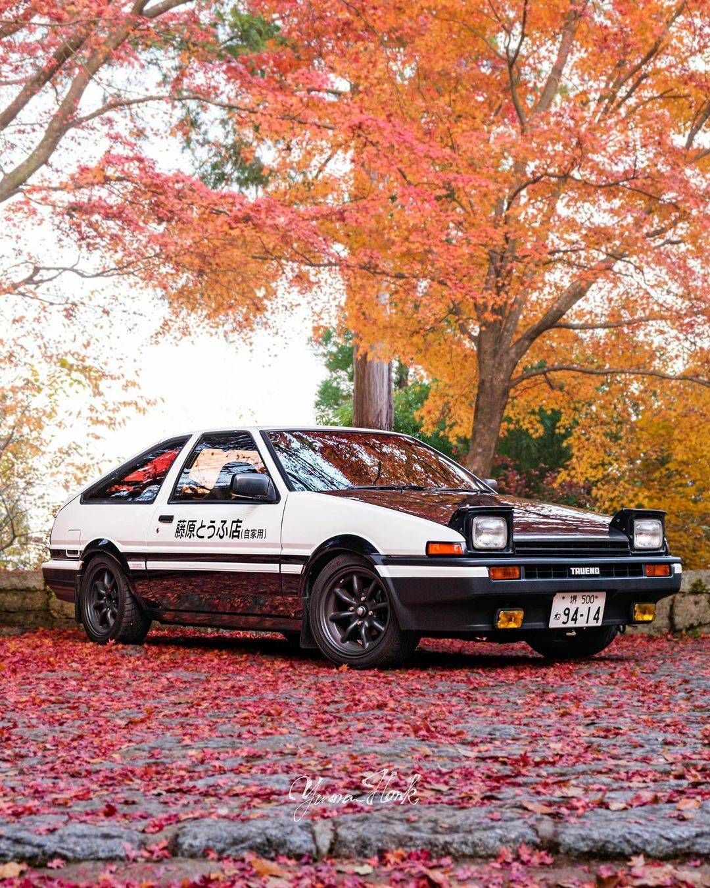

El drift nació en las carreteras de montaña de Japón en los años 70, liderado por pilotos como Kunimitsu Takahashi y popularizado por Keiichi Tsuchiya ("Drift King"), evolucionando de una técnica ilegal para bajar rápido las touge a una disciplina deportiva con campeonatos como el D1 Grand Prix, expandiéndose globalmente gracias a eventos, cultura popular (películas, videojuegos) y competiciones como Formula Drift